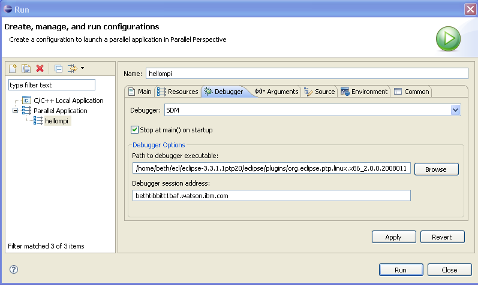
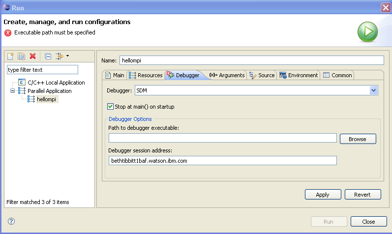
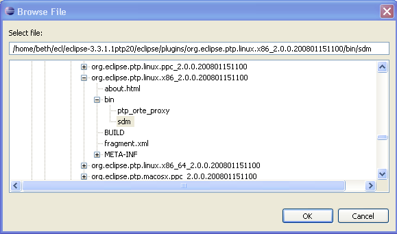

Enter a name for the configuration in the "Name:" field. Here we use the same name as the project.
- Choose a resource manager (Note: a resource manager must be running for it to appear in the drop-down list of resource managers here.)
- Choose the Parallel Project - on the local machine
- Choose the Application Program (executable) from the project - from the remote machine via the Browse button.
(it is probably located in the Debug folder, if this is a debug configruation)

- Enter the number of processes to run, which was probably
set to "0" initially. Enter a value > 0.

- Select the Debugger that will control the parallel processes by selecting "SDM" (the PTP's Scalable Debug Manager) from the selection menu.
- Select the Arguments tab if you need to change any information here.
- Enter any program arguments
- Change working directory if necessary
- Click on Run to launch the program.


Under Debugger options, select path
to debugger executable by clicking Browse... and select the sdm on the remote machine.
(This is probably in your
eclipse/plugins/org.eclipse.ptp.os.arch/bin directory,
where os.arch is your operating system and architecture, e.g.
org.eclipse.ptp.linux.x86)
